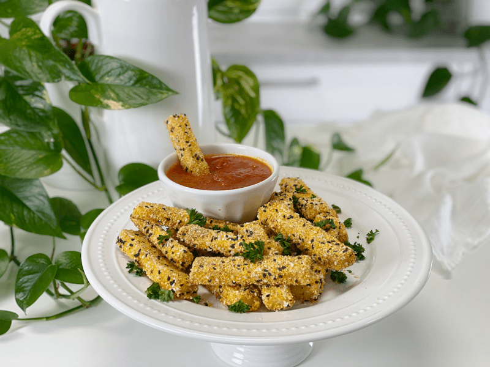
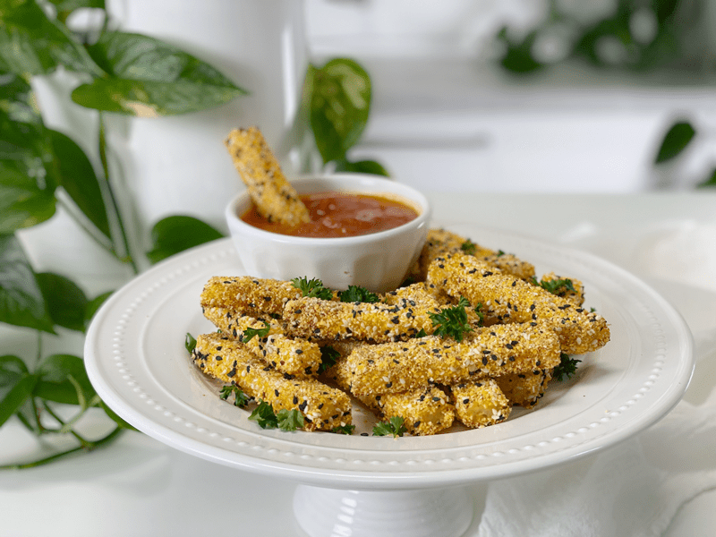

Baked Italian Corn Fries with Marinara Dipping Sauce | Oil-Free
I love all the amazing things you can do with thick, shapeable, structured Italian cornmeal (polenta). Don’t get me wrong, I love a hearty, satisfying, freshly cooked soft polenta with its porridge-like spirit, but I am never satisfied with leaving a dish as-is, where’s the fun in that? These fries are gluten-free, nut-free, soy-free, oil-free and yet…they still remain amazingly delicious. With their crunchy exterior and creamy interior, you might want to hold off on making another dish to serve along with this, because these are non-stop-can’t-resist-good.

Just in case you aren’t familiar with Italian cornmeal, it is commonly known as polenta, which is made from ground corn, much like grits from the American South. It is made from flint corn, which grows in Italy. It holds its shape better than the Southern US corn used for grits, which is called dent corn. I could just call this recipe Polenta Fries, but I wanted to honor the tiny Italian heritage that lurks within me.
Since I am currently omitting oil from my diet, I needed to come up with a way to make crispy fries without using traditional methods. That’s when I decided to bake them after giving them a gentle tumble in a seasoned coating mix. They won’t get super dark in color as they cook, but they do take on a crunchy exterior that is equally satisfying.
When I made this recipe, I used an 11″ x 7″ pan because I used part of the polenta for another dish. So, if you use the whole polenta recipe, which yields 4 cups of cooked polenta, you will want to use a larger pan. If your family is small (like ours) set half of the Italian corn recipe aside for your breakfast meals, and bake the other half for dinner fries.

Make Every Bite Count
- When purchasing Italian corn, purchase only organic and non-GMO.
- When making the plenta, add a strip of kombu seaweed to the cooking pot to increase vitamins and minerals, and to make it easier to digest.
- After you enjoy your meal, go for a peaceful walk; don’t sit down on the couch. Juan Delgado, a sports scientist with New York’s Sports Science Lab states, “It lowers glycemic index significantly, improves your intestinal movement, promotes better sleep, and boosts your blood flow.”
We dipped these fries in my raw Cherry Tomato Marinara Sauce and my Ketchup. I hope you enjoy this recipe. Sending each of you love and prayers. amie sue
 Ingredients
Ingredients
Coating
- 1/2 cup dry Italian corn (polenta)
- 1 Tbsp white sesame seeds
- 1/2 Tbsp black sesame seeds
- 1 tsp dried minced onion
- 1 tsp smoked paprika
- 1/2 tsp onion powder
- 1/2 tsp sea salt
- 1/4 tsp black pepper
Preparation
Preparing the Polenta
- Make the polenta by following the link provided in the ingredient list. Once cooked, come back here to complete the following steps.
- Pour the cooked polenta into a shallow baking pan, spread evenly, then press parchment against the surface, further smoothing the surface.
- You don’t have to be picky about the size pan you use; we will be making fry sticks.
- Pressing the parchment paper on top will help prevent a dry skin from forming on top.
- Place in the refrigerator for several hours or overnight, until it’s completely chilled and set.
- When you take the polenta out, it should have set into a solid block.
- Using a thin spatula, slide it along the edges to loosen the sides.
- Flip the baking pan over onto a work surface. The polenta will come out in a single piece. Cut the polenta into fry shapes.
- I cut mine into 3″x1/4″x1/4″ wedges.
Assembly
-
Preheat oven to 450 degrees (F) and line a baking sheet with parchment paper.
- Combine the dried polenta, garlic, smoked paprika, salt, and pepper in a bowl large enough to accommodate the shapes of the fries.
-
Coat each side of the fries and place them on the parchment paper-lined baking pan.
-
Bake for 35 minutes or until crispy on the outside. It’s not uncommon for ovens to run at different temperatures, so when you bake these for the first time, keep a close eye on them once you hit the 30-minute mark. When they are perfectly cooked, document the time for the next batch you make.
- Enjoy a few minutes after they have cooled. Leftovers can be stored in an airtight container in the fridge for 3 days. To crisp them back up, just pop them into the oven.
© AmieSue.com